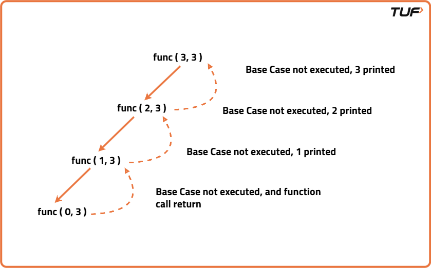
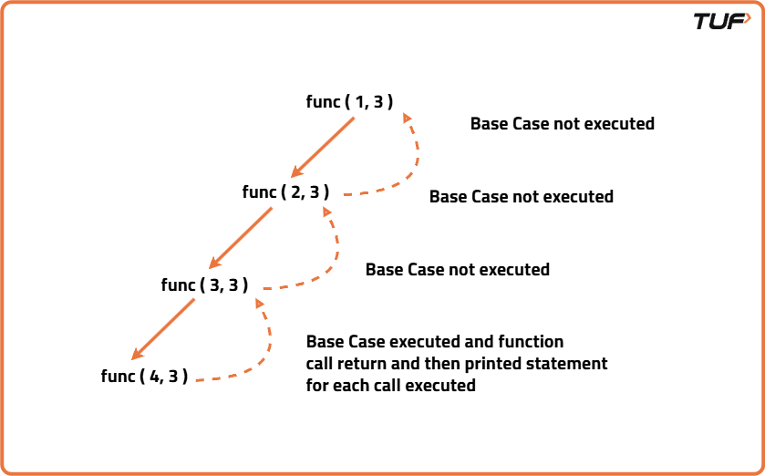

Print N to 1 using Recursion
Problem Description: Given an integer N, write a program to print numbers from N to 1.
Examples
Input: N = 4 Output: 4, 3, 2, 1 Explanation: All the numbers from 4 to 1 are printed. Input: N = 1 Output: 1 Explanation: This is the base case.
Disclaimer: It's highly recommend trying to solve it before looking at the solution.
Forward Recursion
Algorithm
To print numbers from n down to 1 using forward recursion, the approach involves defining a recursive function that takes the current number as a parameter. The function first checks if the current number is less than 1, if it is, the recursion terminates. Otherwise, it prints the current number and then recursively calls itself with the next number decremented by one. This way, the numbers are printed in descending order as the recursion unfolds forward from the base case down to 1. The key is to make the print statement before the recursive call, ensuring the numbers appear from n down to 1 in order.

Code
#include <bits/stdc++.h>
using namespace std;
class Solution {
public:
// Recursive function to print numbers from current down to 1
void printNumbers(int current) {
// Base case: if current is less than 1, stop recursion
if (current < 1)
return;
// Print current number
cout << current << " ";
// Recursive call with next smaller number
printNumbers(current - 1);
}
};
int main() {
Solution sol;
int n = 10;
sol.printNumbers(n);
cout << "\n";
return 0;
}
Complexity Analysis
Time Complexity: O(N), we print every number from N to 1 using recursionSpace Complexity: O(N), stack space used for recursive calls.
Backtracking
Algorithm
Backtracking builds solutions by exploring all options and undoing choices when needed. To print numbers from n down to 1 using backtracking, the function recursively calls itself with the previous number until it goes below 1. After reaching the base case, it prints the numbers while returning from the recursion. This way, numbers are printed in ascending order because the print happens after the recursive call during backtracking. The main difference from forward recursion is that printing occurs on the way back, not before the recursive call.

Code
#include <bits/stdc++.h>
using namespace std;
class Solution {
public:
// Recursive function to print numbers from current down to 1 using backtracking
void printNumbers(int current) {
// Base case: if current is less than 1, stop recursion
if (current < 1)
return;
// Recursive call with previous number
printNumbers(current - 1);
// Print current number during backtracking
cout << current << " ";
}
};
int main() {
Solution sol;
int n = 10;
sol.printNumbers(n);
cout << "\n";
return 0;
}
Complexity Analysis
Time Complexity: O(N), we print every number from N to 1 using recursionSpace Complexity: O(N), stack space used for recursive calls.